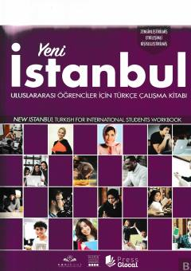

YİChet elliklar uchun turk tili B2 darajasidagi amaliy mashqlar kitobi.
Ushbu kitob chet ellik o'quvchilar uchun turk tilini B2 darajasida o'rganishga mo'ljallangan amaliy mashqlar va ishchi daftardir. Matnlar va topshiriqlar til ko'nikmalarini mustahkamlash hamda kundalik muloqotni rivojlantirish uchun xizmat qiladi.